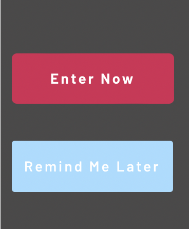
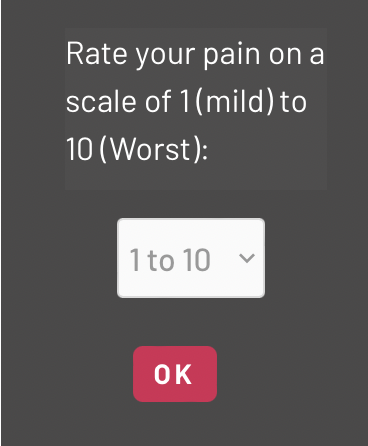
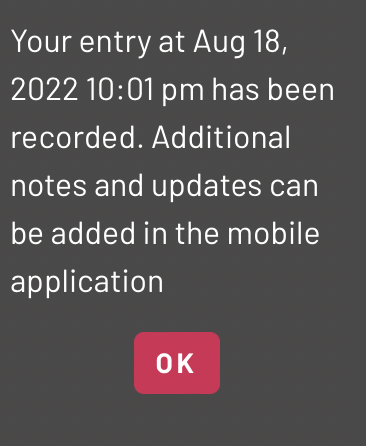

Project description
Topic
For our IT Project Idea, the Awesome Breakfast Club Group have developed an application for mobile and wearable devices which allows users experiencing chronic pelvic pain symptoms to easily record the pain from their Smart Watch. This application will aim to assist users and their specialists in establishing a quicker diagnosis of pelvic pain disorders, by giving users an accurate and convenient way to record their pain. Reaching a diagnosis for chronic pelvic pain conditions can be a long and arduous process, often requiring patients to keep a detailed log of the pain and symptoms. This watch application provides users with an easily accessible method of recording a patient’s pain and symptoms in daily life from the watch face. In the long term, this application can be used to assist in the diagnosis and treatment of common pelvic pain disorders such as Endometriosis, Adenomyosis, and polycystic ovarian syndrome (PCOS).
Rather than having to pause activities to record their pain symptoms, this application will allow users to simply record their pain level and frequency from the home screen of their Smart Watch, tablet, and Smart phone. All these records are then stored within a secure cloud database, which can be downloaded and reviewed in a consultation with their health professional to uncover any trends. In order to allow sufficient trend analysis, this application allows multiple pain records to be entered for a single day, as this can be beneficial in establishing whether the pain is related to certain activities, such as eating or exercising.
Motivation
Annesha’s Journey to Diagnosis
“Since the age of 13 I have experienced frequent pelvic pain. In the following eight years I received many misdiagnoses and had multiple agonizing trips to the emergency room which left doctors baffled. In the end, my diagnosis took nine years and multiple surgeries. Personally, this long process was a frustrating and a very tiring one, as I was constantly needing to convince doctors of the severity and frequency of the pain. I think having a tool to easily record my pain could have helped to speed up the diagnosis process by quickly establishing trends in the pain occurrences.”
Our motivation as team has come from both firsthand personal experience and witnessing the struggles of our loved ones experiencing chronic pelvic pain.
Unfortunately, stories like Annesha’s are all too common, being diagnosed with the chronic pelvic pain conditions, such as Endometriosis, Adenomyosis and PCOS, is often a long and time-consuming process, requiring regular specialist appointments, treatment trials and even laparoscopic diagnostic Surgery. On average an Endometriosis diagnosis can take approximately seven years to diagnose from the onset of symptoms (AIHW, 2019). In these seven years, patients are likely to see many different specialists to establish pattern in their pain symptoms and eventually to diagnose their chronic pain. According to Lone Hummelshoj, Chief executive of the Endometriosis Research Foundation, one of the primary reasons for this lengthy diagnosis period, is the normalisation of painful periods (Dysmenorrhea) (Broster 2020). In conjunction with normalised Dysmenorrhea, delays in diagnosis can also be caused by the overlap of Endometriosis symptoms with other gynaecologic and gastrointestinal diseases (Surrey et al, 2020).
In diagnosing Endometriosis, some of the most common questions patients receive from their specialist are “How often do you get this pain?” and “When and where do you get this pain?”. However, when patients experience painful cramps daily, it’s common for the patient to feel ill-equipped to answer these questions or embarrassed, often resulting in vague and inaccurate answers, depicting non-specific symptoms (Surrey et al., 2020). By equipping patients with a tool to accurately record their pain symptoms immediately at the time of experiencing them, patients are empowered to provide their doctors with accurate information. In providing this resource, it is hoped that doctors will have more information available about the patient’s symptoms to determine if it is mild Dysmenorrhea, or something more serious like Endometriosis, Adenomyosis or PCOS. This application can also be used after diagnosis to track a patient’s progress when receiving treatments, for doctors to evaluate if treatments are effectively reducing pain.
Landscape
Over the years various methods have been used to record pain diaries, including paper diaries, mobile note applications and in recent years pain diary apps. With the introduction of pain diary apps in recent year, like QENDO, users can record the pain and symptoms for medical usage (QENDO 2020). These apps have been revolutionary in providing convenient ways for patients to record the symptoms; however, they often use tedious user interfaces which mean that completing the diary entries can take much longer than they need to. Today, wearable technologies are now a relatively common accessory in the form of Smart watches. This increased use of smart watches presents an opportunity to create a more convenient method of recording painful symptoms. In public situations where traditional pain diary logging is not a feasible option, or even in debilitating pain occurrences, this technology can provide a quick way of recording the occurrence, to ensure patients maintain an accurate record of their symptoms. In the first prototype of the application, by utilising a simple user interface on Smart Watches, users will be able to record their pain symptoms using Standard entry mode.
| Our application |
Flo |
Clue |
Glow |
Period tracker lite |
| Records pain episodes, with a focus on assisting diagnosis of chronic pain disorders. |
Fairly comprehensive app which allows for better ovulation period tracking. |
A comprehensive app that largely covers menstrual cycle, mood and the ability to track pregnancy. |
A data-driven menstrual and ovulation calculator and tracker. App is largely designed to assist with tracking an individual's fertile window. |
This app appears to be, largely, a period tracker and calculator app. It utilises three months of the user's data to estimate the next period. |
| Allows tracking of:
Record the time of pain
Record severity of pain
Record location of pain
Detail the type of pain in note format
|
Allows tracking of:
Menstrul flow
Discharge
Mood
Sex drive
|
Allows tracking of:
Period
Excersise
Mood
Health log
|
Allows tracking of:
Physical and mental symptoms of period
Ability to log up to 40 different health signals
Log sexual activity
Make charts of menstrual and fertility data
Ability to set medication, birth control and ovulation reminders
| Allows tracking of:
Menstrual flow and cramps
Bloating
Backache
Breast tenderness
Headache
Weight
Temperature
Mood
|
| Addtional features include reminders to elaborate on pain records, compatibility with Android or iOS and importantly with smartwatches |
Addtional features include alerts for late periods, additional information surrounding periods, menstrual cycle and compatibility with iOS and Android. |
Addtional features include predictive menstrual cycle, widely used and “tried and tested", inclusive of all ages and genders, allows the addition of a partner to the app account and is compatible with Android and iOS. |
Addtional features include premium version with greater information available, similar apps from the same creator that may improve user experience and compatibility with iOS and Android. |
Addtional features include monthly calender display of period dates, fertility days, and ovulation. great data display for recorded changes, premium features and compatiblity with iOS and Android. |
Aims
Our aim for this project is to create a pain management application that is compatible with smart phones and smartwatches. We will begin to do this by establishing a platform to create the application on. We will seek to find a cost-free platform with pre-built workflow actions, rather than having to learn to code, for a quicker and easier setup so that time limits can be met and issues due to inexperience minimised. The application must be compatible with mobile phones and smart watches. If the time limit does not allow for the implementation of smart watch usability the application must be viable for smart phones. While designing the application and the usability for the smart devices we aim to find a suitable database to work with storing and users' data. This will enable the results to be opened from the servers as a backup and an accessible information source for doctors who are treating the pain using the app. If the database was to fail at any point or we are unable to source a suitable one within the original time limit, the information will be stored and sourced locally via an ‘in-app’ database. This fall-back option also means that information can be stored locally when the database is under maintenance or inaccessible. After getting the initial functionality of the application working, we aim to create an attractive and efficient user interface so that the application will be a more friendly and appealing option for people to use. Our final goal is to link the original application from the software which we develop it to a popular application store (google play or apple store). This will allow it to be downloaded by users easily and stored on the smart device.
Plans and Progress
Our research for this project began with the basic steps of how to create an application because across the group we had no understanding of what was required or what products allow for the building of an application. We started by searching for similar apps and trying to find information on how these were built, but unfortunately had no luck. After that Dominic began looking for ways to build an app in general and came across a video on how to create a ‘timesheet application’ via ‘Microsoft Power Apps’ (Deasey, 2022). This seemed like a great place to start for us for a few reasons, first of all it provided a step-by-step process of how a basic application can be made, secondly it is financially viable because we all have free access to ‘Microsoft Office’ through our RMIT emails and finally, because our application is effectively a very basic form of timekeeping (for pain events).
Initial Prototype:
Our next step was to utilise ‘Microsoft Power Apps’ to build a prototype of our application so that we could start to gain an understanding of the requirements and systems that might be used for our final product. The tutorial video suggested a variety of data sources which we are compatible with ‘Power Apps’ but we decided to choose ‘Sharepoint’. We chose ‘Sharepoint’ because it is free with our RMIT email addresses, it is compatible with ‘Power Apps’ and it doesn’t require an extensive set up or knowledge to use it effectively.
The first step of creating the application was to organise the data source to a list/table style so that the columns represented the information titles, such as username, time of pain and level of pain. The username column was created as an ‘ID’ column. This records the users email address upon submission. The column for our time record was selected as a ‘date & time’ column and we turned on the feature which records the current time when the entry is created. The column for the ‘pain level’ was created as a ‘choice’ column. ‘Sharepoint’ allowed us to enter as many choices as we wanted for this column. We added 10 choices, in line with standard medical pain rating systems. The rows would then be populated with relevant detailed information each time data entry was submitted from the application. An important note at this stage is to remember the title names of chosen columns, because when we started building the app whilst watching the tutorial, the differences our title names and the tutorials title names caused confusion and added a considerable amount of time to the process.
The next step of the process was to start building the user interface of the application so that the records could be populated. When creating an application in ‘Power Apps’, it gives the format options of ‘Tablet’ or ‘Phone’. Since our application is being created to offer a quick response for people to record their pain and so, for the purposes of our prototype, we chose the phone as it is the most accessible option to our potential users. We then linked our data source ‘Sharepoint’ to the application, which made our columns available to be used in the application.
Our design was to have a simple, user friendly interface with minimal steps. To achieve this, we decided that the application needed a drop-down list of the 10 pain levels and a button to record that pain. To make the application intuitive, we put the pain level drop down list above the submit button so that it represented a top to bottom order of process. We had decided to make the colour theme the same as the website we had created.
Once the basic layout of the application was complete, we had to make the buttons functional. For the ‘record pain’ button, this meant we had to link a ‘patch’ function which, along with other abilities, creates records in our chosen data source. Whilst doing this, we add the required data to the patch such as user email and the pain level which the user selects from our drop-down list. We do this so that the app pulls all the information which we want to be recorded in our data source.
We tried to find an SDK application builder that would be more suitable to an open market. In our initial search we found one called XCode, which although would be suitable, it was limited to use on iOS devices and therefore reduces our potential market. After looking into it Bubble io seems to be a viable option for our needs and so we have decided to create the application on that platform.
Phone Application Prototype:
So, for the app development and design of the app we have found a pre-built site that allows us to design and program as we go at the same time as testing due to the lack of ability for me to type I will do my best to explain what I've gone through over the past few weeks
In the beginning it was a lot of just trial and error trying to find a website that allowed us to flesh out what we were looking for at first, we had looked at XCode and ... but then we found an application called Bubble.io. Unfortunately, it wasn’t an app we were able to use without an account so I took the sign-up process and continued to investigate finding whether this application would suffice.
Drop down tab added
Slider design decided
Button registry added
Workflow programming started
Drop down tab csv added
Microsoft login plugin
Slider changed from a range to simple
Slider background designed but not added
Workflow programming finalisation
Group decision on input to 1 per 120sec
Current Smart Watch Application Prototype:
Similar to the Mobile application prototype, the watch application prototype has been built using Bubble.io. Due to the limitations of Bubble.io, the initial smart watch prototype has been built in the same fashion as a mobile application in bubble.io, however the screen dimensions have been specified to match the dimensions of an Apple Watch.
The Prototype watch application has been built to initially open on the “Pain Entry” screen which displays with two buttons “Enter now” and “Remind Me Later”. When “Enter now” is selected, the “Intensity” screen displays with the prompt “Rate your pain on a scale of 1 (mild) to 10 (Worst):” and a drop-down selector ranging from one to ten, with an “OK” button displayed below. Once the user has selected the pain intensity score from the dropdown and selected “OK”, a confirmation screen then displays with the date and time of the entry and the intensity selected.
Alternatively, if the user selects the “Remind me Later” button on the “Pain Entry” screen, a confirmation screen will display with the message “Your entry at [Current date/time] has been saved. We will remind you via notification in 30 minutes to enter the intensity of the pain.”
  
In Bubble.io, all these pages have been built by first developing the visual aspects of the page such as text, buttons and dropdowns. Then once the user interface was completed, the workflows were created for each button by linking the action required to the relevant button which in turn displays desired information on the next page. As each page and workflow has been added, the components have been tested using the ‘Preview’ option in Bubble.io and debugging early in the development process.
Future plans for the application:
The next steps for developing the watch application are integrating the mobile and watch applications. By connecting the two applications to a single account, users will be able to log in to their account via their watch for a quick record and their mobile phone when appropriate to either expand on the brief record or to view previous records and identify ongoing trends.
Using Bubble.io, we will be able to build the application to be compatible for both Apple and Android devices. However, building the Smart Watch applications for release will require additional software as this is not currently a service provided by Bubble.io. The Android Smart Watch application will be built using a Wear OS project template in Android Studio, and then integrated with the mobile watch application (Android Developers 2022). The Apple version of the Smart Watch application will be built using Xcode and Swift UI (Apple Developer 2022).
Once the apps are developed and tested, it will initially be released to the public using Google Play Console to publish to the Google Play Store for Android devices (Google Play 2022). For our secondary release to Apple devices, we will submit the applications for review using App Store Connect, which upon approval can be published to the App Store (Apple Developer 2022).
Once released to the public, we will also be releasing regular updates to the application to improve functionality of the applications, such as adding cycle tracking, home screen widgets for Apple iOS, and a discrete app icon option.
Roles
We did not set specific roles for the design and development of our application because the app design program which we used, Bubble io, did not have a free option which allowed multiple users to edit the application remotely. This meant that only one person could be elected to physically develop the application. We often shared screens whilst Trent was working on our application so that we could all offer input to the user interface, application features and its functionality, this led to all group members contributing toward all roles required to create the application. We found that this method was also pertinent to the nature of the group assignment in that we were collaborating on all aspects of the application development.
Scope and limits
Our application is being created to improve the frequency which people suffering from undiagnosed chronic pain conditions record their pain, so that they can accurately report back to their GP in hopes of being diagnosed more quickly. To do this, we need to develop a record keeping application that is available and easy to use for our target audience even at the most inconvenient times.
This application therefore needs to have a seamlessly simple user interface which records the users ID in form of an email address, the time of their pain episode and the intensity of their pain. We aim to achieve this level by the time our assignment is due, but scope beyond this may include the ability to add specific notes to a pain record at a more convenient later date in order to improve feedback and face recognition log-in to improve user interaction.
In future updates to the application, we will introduce cycle tracking as an optional feature for the mobile application. As the application is supporting those experiencing chronic pelvic pain, which can have adverse effects on fertility (depending on the condition), it is important that the application prioritises pain management, rather than focusing on the user's fertility. For this reason, the Cycle Tracking feature will allow for ovulation and period tracking, but it will not focus on fertility and conception.
Utilising the knowledge of medical professional, future versions of the app will also provide users with insight as to how the frequency and intensity of their pain compares to standard period pain.
Tools and Technologies
Building our application required the use of many different tools and technologies for planning, prototyping and creating the final product. These tools and technologies have been listed and briefly explained below.
Sharepoint
Sharepoint is a table-based data point that stores information for users to review as needed. It was available to use via the Microsoft365 account associated with our RMIT email and so provided a cost-effective way for us to store information for our prototype. SharePoint is also easy to integrate with Microsoft Power Apps which was another important tool for our prototype.
Microsoft Power Apps
Power apps is a tool which allows creators to easily model user interfaces and code functionality of an application. This was a great starting point for our application as it was freely accessible through our RMIT email and associated office 365 account; it allowed us to create a basis for our user interface and it also gave us insight into ‘work flows’ or the coding of app functionality.
Bubble io
Bubble io is a ‘no-code’ application development tool that allows users with little to no experience build fully functional ‘Software as a Service’ applications and easily design efficient user interfaces. The free to use tool has pre-built work-flow functions which can be integrated into the users' applications rather than the laborious method of learning and writing the code that is required to create certain functions, such as recording time stamps or noting information. Bubble io also offers an in-app database to store information and integrates simple add-ons such as ‘login with Microsoft’ which outsources the storage of sensitive data like passwords and emails.
Microsoft Teams
Microsoft teams is a file sharing platform with communication abilities so that users can collaborate ideas when working on projects. We used its chat function to discuss our progress, to plan video meetings and to share resources. We utilised the video call function to screen share our active sessions and give each other feedback or ideas for development.
Testing
In Software testing there are four levels of testing; Component Testing, Integration Testing, System Testing, and Acceptance Testing (Reference ISTQB).
In the development of the prototype applications, we are using Component testing to verify the individual functionality of components such as buttons and fields. Once the individual components have been tested, we have then used Integration Testing to verify the different components function in isolation and together using the application workflow. Using Component and Integration testing early in the development process will reduce the presence of defects and bugs and reduce the time required for System Testing.
With the individual components and their integration tested in development, we can then move on to System Testing, which involves testing all the components together as a whole application. System Testing of the application prototype will require functional Blackbox testing. Functional Blackbox testing involves testing the user interface against the application requirements. As mentioned in the previous sections, the aim of the application is to allow users a quick method of entering their pain occurrences, so in this case some of our watch application requirements would include:
Users can select the “Rapid Entry” button and a screen will display with options to ‘Enter now’ or ‘Remind me later’.
Upon selecting ‘Enter now’, the user is prompted to enter the intensity of the pain and then tap the ‘OK’ button.
Once ‘OK’ is selected, the user is taken to a confirmation screen, displaying the date and time of the occurrence, and the intensity selected.
When the confirmation page is displayed, the entry is saved in the database.
If the user selects ‘Remind me later’, the application will display a confirmation screen and trigger a reminder notification 30 minutes later.
With these requirements established, we can then develop test cases containing step by step instructions as to how the application will be used in testing. These test cases will utilise a variety of variables to test both intended (positive) and unintended (negative) usage of the app. This behavioural testing will verify the functionality of the user interface and ensure that it can only be used as intended, reducing the likelihood of bugs within the application.
The second part of Blackbox testing will be verifying the interface connection between the application and the database, in this form of testing all possible variables within the app are tested to ensure they transferred to the database.
With Component, Integration, and System Testing completed in the development environment, we will then complete further System testing of the applications on Mobile Phones and Smart Watches, then we can progress to the final stage of testing; Acceptance Testing. This is similar to System Testing; however, it is not used for the purpose of detecting defect, but rather to verify that all stakeholders are satisfied with the application prior to release. Once Acceptance Testing is completed by the stakeholders, further testing will be completed by ten users from the target audience of the app to confirm it meets the needs of the customers. In this stage minor fixes can be made, however any major changes suggested by the customers will likely be released in further updates.
Timeframe
| Week |
Main Objective |
individual tasks |
| 1 |
Decide a project and create a list of the key elements. |
Annesha- create idea
Connor- assist in idea development
Dominic- assist in idea development
Jared- assist in idea development
Trent- assist in idea development |
| 2 |
Research similar applications and create a list of required products to create a prototype. |
Annesha- Research app development platforms and present to team.
Connor- Develop user interface ideas and present to team.
Dominic- Research app development platforms and present to team
Jared- Research suitable databases and present to team
Trent- Research suitable databases and present to team |
| 3 |
Create a prototype of the app in PowerApps, bubble io and other platforms if required. |
Annesha- Presentation design, progression tracking, watch app prototype.
Connor- Presentation design, assist with app layout.
Dominic- Create prototype in ‘PowerApps’
Jared- Provide functionality advice
Trent- Create prototype in ‘Bubble’ |
| 4 |
Test prototype for any issues or improvements. |
Annesha- Watch app prototype.
Connor- Test PowerApps prototype and watch app prototype, presentation design.
Dominic- Test app for issues and apply improvement feedback from others.
Jared- Test Bubble.io prototype and Watch app prototype.
Trent- Create prototype in, Bubble.io’, test app for issues and apply improvement feedback from others. |
| 5 |
Research similar applications and create a list of required products to create the app using correct software. |
Annesha- App research, presentation design.
Connor- App research, presentation design.
Dominic- App research.
Jared- Research applications more suitable for the project
Trent- App research, continue working on Bubble.io for improvement. |
| 6 |
Learn to use the software in depth. |
Annesha- Learn new app
Connor- Learn new app
Dominic- Learn the new application and its new tools, attempt to start project.
Jared- Learn how to use new application.
Trent- Learn the new application and its new tools, attempt to start project. |
| 7 |
Create application in software that is more accessible. |
Annesha- Start watch project with new application, Website development.
Connor- Website development.
Dominic- Start project with new application, project management.
Jared- Assist with app development and feature design with new app.
Trent- Start project with new application. |
| 8 |
Create database and implement. |
Annesha- Continue watch section, implement storage solution to work with app.
Connor- Research appropriate database storage solutions, website development.
Dominic- Implement storage solutions.
Jared- Research appropriate database storage solutions.
Trent- Continue developing app. |
| 9 |
Test application as a user and list suggested improvements. |
Annesha- Developing and executing test plans.
Connor- Testing, Website development
Dominic- Website development.
Jared- Testing, Debugging.
Trent- Debugging, working on project. |
| 10 |
Make improvements on application. |
Annesha- Debugging and resolving defects.
Connor- Retesting.
Dominic- Debugging and resolving defects
Jared- Retesting.
Trent- Debugging and resolving defects. |
| 11 |
Collect 3rd party user feedback on the application. |
Annesha- Create trial version for 3rd party users to install and trial of smart watch version.
Connor- Create a page for feedback and assemble responses for review.
Dominic- Create trial version for 3rd party users to install and trial of smart watch version
Jared- Create trial version for 3rd party users to install and trial.
Trent- Create trial version for 3rd party users to install and trial. |
| 12 |
Assess feedback and discuss its legitimacy. Plan for viable improvements following feedback. |
Annesha- Discuss results and plan for improvements.
Connor- Discuss results and plan for improvements.
Dominic- Assemble group for discussion over user feedback.
Jared- Discuss results and plan for improvements, work on website.
Trent- Discuss results and plan for improvements. |
| 13 |
Make viable improvements. |
Annesha- Resolve issues and improvements given from third party source.
Connor- Website development.
Dominic- Website development.
Jared- Resolve issues and improvements given from third party source.
Trent- Resolve issues and improvements given from third party source. |
| 14 |
Test application to ensure improvements are working. (Acceptance Testing). |
Annesha- Developing and executing test plans, respond to feedback and improve watch application.
Connor- Respond to feedback and improve watch application.
Dominic-Test Application, improve website.
Jared- Test Application, improve website.
Trent- Respond to feedback and improve watch application. |
| 15 |
Release application to the public. Monitor and update as required. |
Annesha- UI/UX Designer. Consisting of informing and creating updates around design and useability of the program.
Connor- Developer and QA engineer Will continue to improve and repair the program and website.
Dominic- Project manager Will continue to provide with direction and assist with application and website.
Jared- Developer and QA engineer Will continue to improve and repair the program and website
Trent- Developer and QA engineer Will continue to improve and repair the program and website. |
Risks
We have assessed the potential risks with the application and have decided to categorise them as either during development or post development. While deciding which software to develop the project, if we are not considered in our approach, we risk roadblocks that hinder the successful creation of the app, such as; overlooking beneficial features or misinterpreting a features operation. This could cause us to find out late in the project that we need to create a new solution to resolve the issue or completely redesign sections of our application. We also need to consider the potential for storage failure that could be derived from the software compatibility with certain storage systems, as well as storage location and information becoming corrupted. This will hopefully be resolved by storing data locally in addition to the cloud-based storage. This way the information has a ‘back-up’ and if needed the data can be pulled directly from the users mobile on request.
Security of the application is another, and possibly the biggest, risk that will face in the creation of this application. Our main concern is the protection of our user's personal information such as emails and passwords. We plan to outsource the login process by integrating ‘Microsoft Login’. This allows users to log in with the comfort of knowing that their data is being managed by a well-versed and reputable IT company. It also mitigates our risk of data breach significantly.
Ensuring that the application is an easy to use, reliable, and trustworthy source of information for analysis is another concern and risk. This includes misuse of the application for personal gain, such as those using it in order to access to certain medications. Though this facet cannot be eradicated, we intend to implement restrictions that will limit it. We will create limitations to the editing capability of previously entered information, whilst still allowing the user to note or flag incorrect entries. The limitations will stop people from editing previous dates or adding new events for a time which has elapsed. We will program the application so that the user will have a small window following the entry where they can edit the pain level in case they have entered any information incorrectly.
Our biggest risk in creating this project is its ability to contend with the established competition already in the market and to gain such reputability that industry professionals will accept our application to assist with medical diagnosis. Creating the application to compete with others will push us to implement more advanced features that can be used easily for any user, as well as to prove its legitimacy for medical examination.
Group processes and communications
Despite communicating across multiple time zones, we have managed to keep regular meetings by having constant discussion via Microsoft teams chat function and via a private discord group. These open chat forums have allowed us to note any schedule changes and find suitable times for us all to meet up. The use of multiple platforms has had pros and cons. It has meant that our group has had to learn how to use multiple platforms and opens the opportunity for information to be missed or overlooked, however it has also offered each person the use of a platform which they are more comfortable with and therefore promoted inclusivity and engagement.
Our meetings have been great for updating each other on our progress and ensuring that we haven't had multiple people working on the same sections of the assignment, but mainly they have facilitated the opportunity to share our perspectives on aspects of the assignment, allowing us to have deeper understanding of the requirements and to produce ultimately a higher quality of work than we would have done if we had not collaborated so closely.
Skills and Jobs
To improve and advance our project, we will require new skills and therefore new roles brought to the team. We will be creating roles that we deem essential in creating a functional and exceptional product. We reviewed the skills required and discuss below the roles necessary to create the application.
The first role we sought was one which would understand the project as a whole and create goals, stable communication and efficiencies between other positions. We decided that a Project Manager would be suitable. The project managers role is to ensure the application is produced efficiently and effectively. Tasks include; time management, budgeting, quality control, and improving communication. They keep the team members informed and proactive while using their knowledge, experience and expertise to contribute to the project where appropriate. The project managers skills must include strong communication abilities, time-management, strong organizational skills and multi-tasking, as well as have a technical background and hands-on experience in software development and web technologies.
Another role we decided to employ is a UI/UX designer. They take the initial conception and design the appearance and many added features of the app. They are the concept artists of the project who create and design the profile for the app to ensure that it is user friendly and has an appealing design, they will work closely with the project manager and app developers to ensure the project follows the design. The skills and experience for this include; good communications skills, time-management, knowledge of wireframe tools such as wireframe.cc and InVision, experience as a UI/UX designer or a similar role, as well as a BSc (Bachler of science) in Design, Computer science, or any relevant field for the role that could be considered. They may be assessed based on previous work or a presentation regarding their role.
A crucial role in creating the application were the developers, and we feel that they are equally essential to the ongoing improvements of it. In considering areas of expertise, we aim to include developers who specialise in mobile and/or smart watch programming. This way we will be sure to have members who understand the compatibility and implementation required to achieve our goal of phone and smartwatch compatibility. Their role will be to program and create the application based on the guidance of the Ui/UX designers and project manager. The skills needed for the role are; a deep understanding of mobile and smartwatch compatibility, proficiency in at least one programming language such as java, familiarity with programming tools such as Git, Visual studio code, interpersonal skills, problem solving skills, analytical skills and understanding of OOP (Object orientated programming) design principles. They are the builders of the project, piecing together the project and fixing possible problems.
Our fourth role we investigated was a QA (quality assurance) engineer. We realise the importance of an issue free application in an age that demands simplicity from technology. The QA engineers' job is to ensure that there are no bugs with the application, such as crashing bugs, performance issues, data saving issues and much more. Another required skill of the QA engineer is their ability to adapt to various devices. This may cross over with and require communications with the mobile application developers while creating the application and will give us the proper ability to adapt to smartphones and smart watches.
Apart from the full-time staff we are going to employ, our project requires in-depth knowledge of the medical field which it encompasses. In this case we are looking for industry specialists to consult on relevant medical practices. This will help us build our program to include useful features and being an accurate measure for medical professionals. Getting proper diagrams that may be used for future variations of the application that users can rely on for more descriptive information as well as more vital information that could assist doctors or medical professionals. We aspire to make the most of our app while keeping it simple, using the information from professionals could assist with optional tools within the application for more versatility.